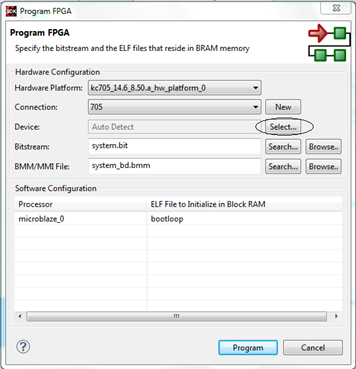
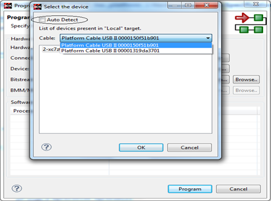

To select the cable-type and device, connected to the host, using the Program
FPGA wizard, do the following:
Select Xilinx tools > Program FPGA to launch the Program FPGA
dialog box.

Click Select to specify appropriate FPGA device among the various FPGA
target devices, if there is more than one cable connected to the host. The
Select the device dialog box appears.

Select a cable and a FPGA device.
Click OK.
Click Program to program FPGA. Alternatively, if there is only one cable
connected to the host, you can click Program button directly with the
default settings to Program FPGA.
Note: If the Device status is Auto Detect, SDK automatically picks up the
first cable and the first device from the list.